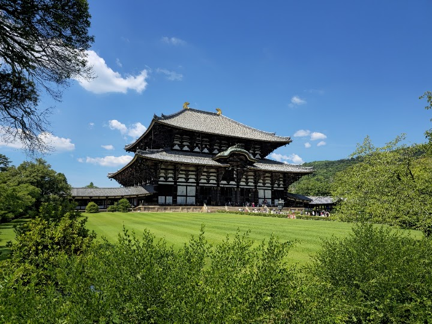
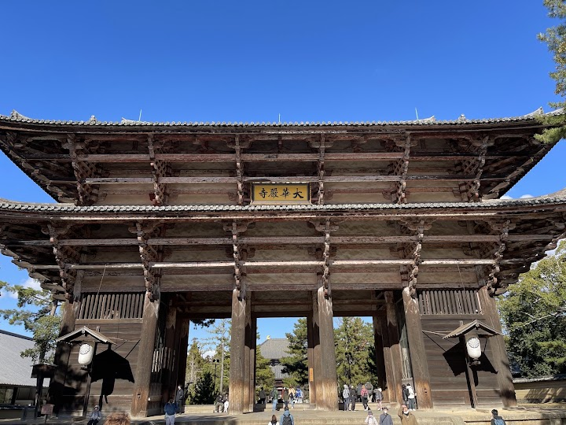
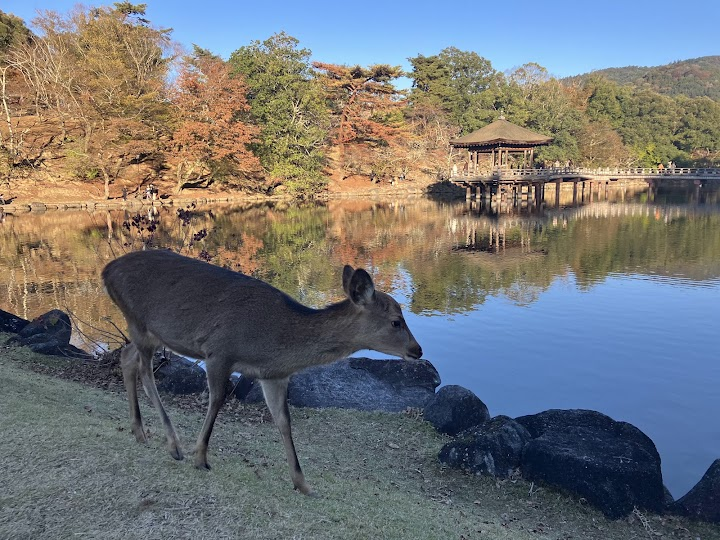
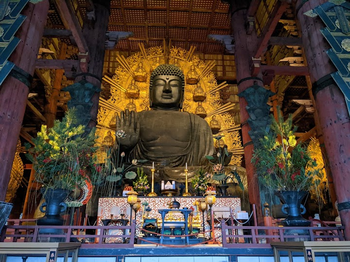
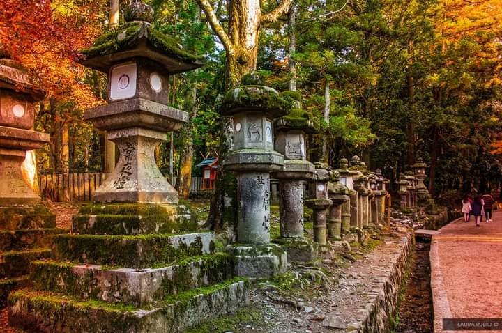
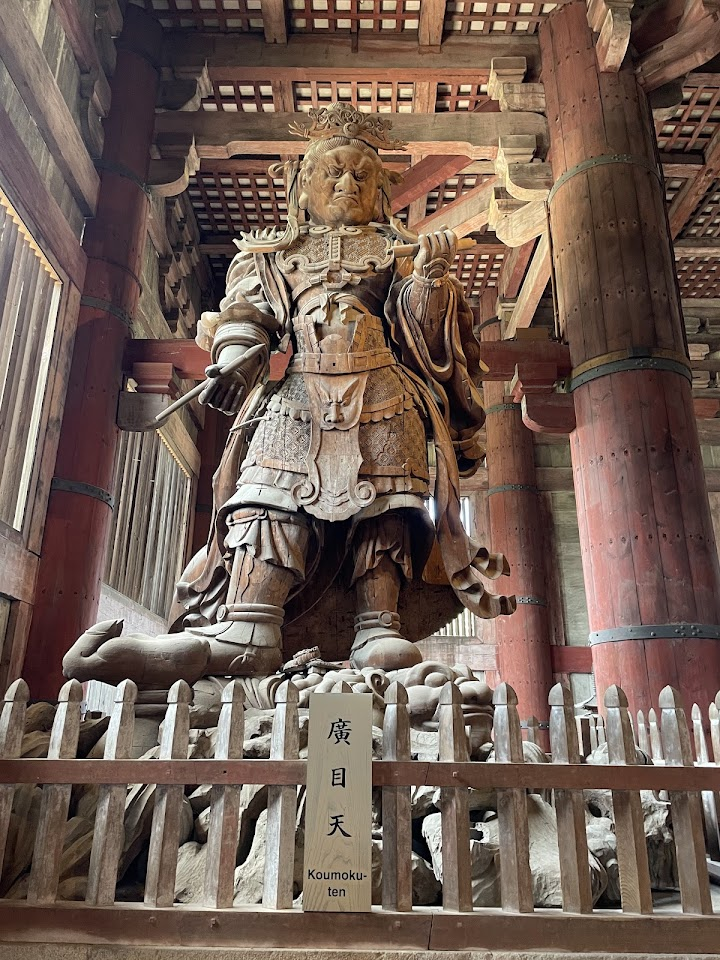

Nara Park
Landscaped, public park with ancient temples & the Nara National Museum of art, plus tame deer.
Open in Google Maps (street view, more photos and reviews there)






Visitor tips on finding it and getting there
An absolute highlight of our trip! A magical experience for kids. We had a wonderful day exploring Nara Park with our kid, and it was easily one of our favorite family experiences in Japan. The blend of beautiful nature, ancient history, and friendly animals is perfect. The park grounds are massive and stunning, leading you directly to magnificent shrines and temples. Seeing the incredible wooden structures and walking through the peaceful paths felt like stepping back in time. The biggest hit for our kid was, of course, the free-roaming deer! You can buy special deer crackers (shika-senbei) f
I’ve always dreamt of coming here. Going to a national park where deer come up to you, bow and basically ask for food. I took the metro to Nara, from there it was just a 5 min walk to get to the first deer. There are so many tourists at the entrance of the park already at 8:30 in the morning. You buy the deer crackers for little money before you enter the gardens and the park. Please, as a courtesy to the locals, the deer and the traffic, only feed the deer inside the park! Walk up the Mountain View point to have less people, but deer are everywhere. There are amazing temples, tomb stones,
⭐⭐⭐⭐⭐ Nara Park was one of the highlights of our family trip to Japan! Visiting as a family of 10 across three generations, we all had an amazing time. The famous deer were everywhere and were surprisingly friendly. Feeding them with the deer crackers was such a unique experience, especially for the kids, who couldn't stop laughing whenever the deer bowed for food. Even the grandparents enjoyed interacting with them and taking photos. The park itself is beautiful, spacious, and well-maintained, with plenty of scenic spots to explore. The atmosphere was peaceful despite the number of visitor